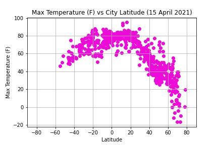

WeatherPy: A Summary
This project looked at analysing weather patterns in relation to the equator. For this, a python script was created to pull 500+ random latitudes and longitudes then find the closest city. Using OpenWeather API, current weather data was pulled for each city.
Scatter plots were generated using Matplotlib for the overall max temperature vs latitude, humidity vs latitude, cloudiness vs latitude, and wind speed vs latitude based on the data found in these cities. The purpose of this site is to present the visualizations and an analysis of this data.